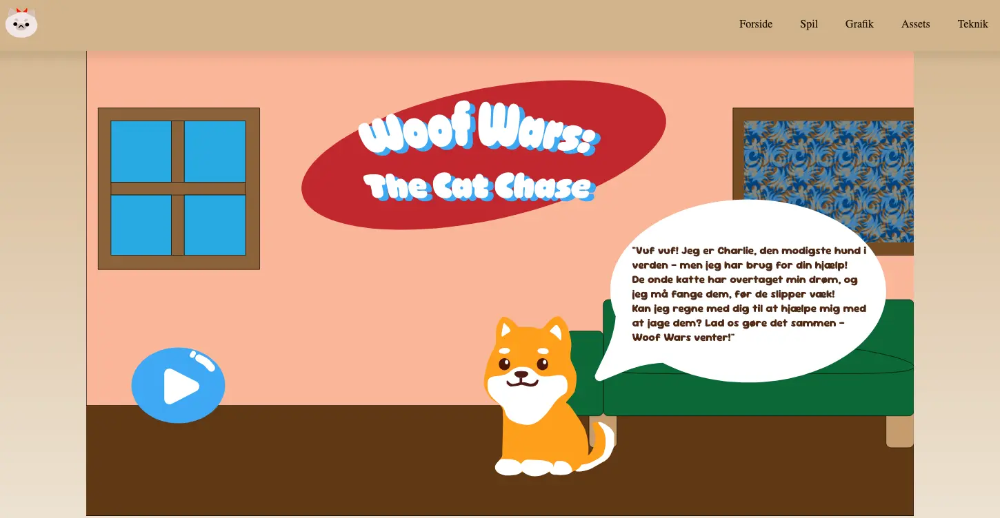
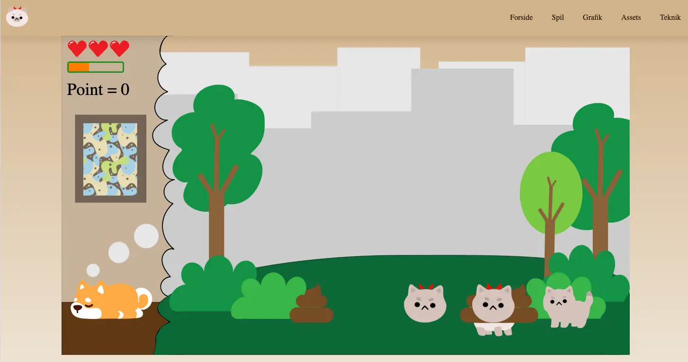
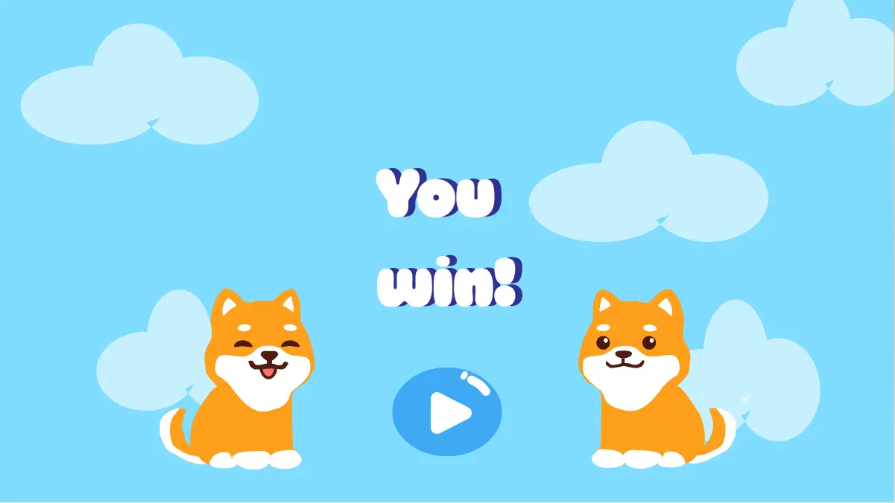
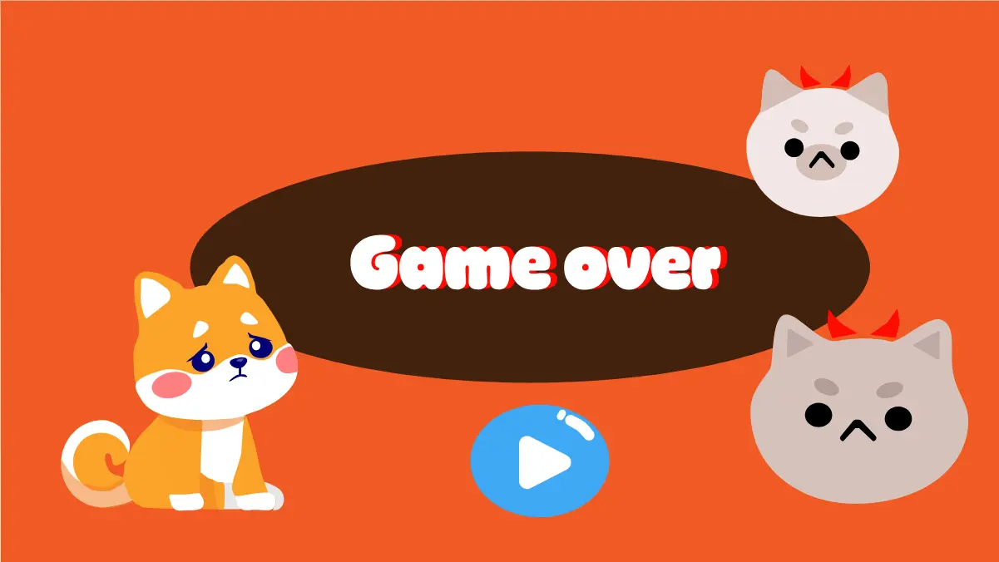

Uddannelse
- Multimediedesign, KEA – påbegyndt 2024, forventet afslutning 2026
Valgfag: Frontend Development (HTML, CSS, JS, Astro)
Fokus på UX/UI, visuel design og digital formidling - Professionsbachelor i Sygepleje, Københavns Professionshøjskole – 2022
- Studentereksamen, Studentarskúli í Hoydølum (Færøerne) – 2015
Skills
- HTML
- CSS
- Javascript
- Astro
- React
- Tailwind CSS
- Adobe Illustrator
- Adobe Premiere Pro
- Shopify
Nogle af mine værker





